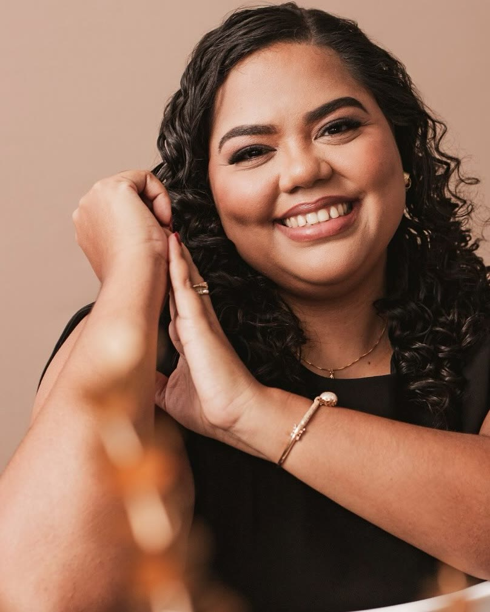

Endocrinologia · Itaigara, Salvador
Dra. Andreza Berlink
CRM-BA 29.973* · RQE 20.030*
* registro auto-declarado pela médica; não confirmado no conselho em 17/11/2026.
Tireoide, diabetes, obesidade e hormônios, com escuta e olhar clínico.
Atende no Itaigara Memorial e também on-line. A consulta começa pela lacuna entre o que você sente e o que os exames mostram.

Por onde começar
O que você quer entender hoje?
Escolha o assunto e leia no seu tempo. Cada página explica o que costuma ser avaliado e como o acompanhamento é organizado. A conduta é individual, definida em consulta.
Tireoide
Cansaço, perda de peso, palpitação ou alteração no colo podem ter origem na tireoide. A avaliação começa pela história e pelos exames certos.
Ler sobre tireoideDiabetesDiabetes
O diabetes é uma condição crônica que pede acompanhamento, não só uma medida isolada. A consulta organiza diagnóstico, metas e rotina.
Ler sobre diabetesObesidadeObesidade
O peso não se resume a escolha individual. Genética, ambiente, sono, estresse e outras condições influenciam. A avaliação é clínica e o plano é individual.
Ler sobre obesidadePrimeira vezA consulta
Como é a avaliação, o que levar e como o plano é combinado.
Ver a consultaEntre o sintoma e o exame
Uma lacuna para investigar.
A bio dela resume a ideia: entre o que você sente e o que os exames mostram, existe uma lacuna. A consulta é o lugar de olhar para ela.
Escuta
O sintoma e a história vêm antes do exame.
Investigação
Exames escolhidos para responder a perguntas concretas.
Acompanhamento
Retornos para ajustar o plano com o tempo.
Na consulta
Escutar, examinar e organizar.
A consulta é uma conversa sobre o que você sente, o que os exames mostram e o que ainda falta entender.
- A história
Sintomas, rotina, sono, remédios e histórico da família.
- O exame
Pressão, peso, exame físico e os sinais que ajudam a entender o quadro.
- Os exames
Pedidos conforme a pergunta clínica, com explicação do que cada um mostra.
- O plano
Metas, tratamento e retorno combinados com você.
Hipoglicemia com confusão, desmaio ou falta de ar? Procure atendimento imediato. A consulta é com hora marcada e não é serviço de urgência.
Sobre
Endocrinologia com escuta.
Dra. Andreza Berlink é endocrinologista no Itaigara, com foco em tireoide, diabetes, obesidade e hormônios.
A bio do Instagram diz: “Entre o que você sente e o que os exames mostram, existe uma lacuna e é aí que eu amo estar.” O atendimento é presencial no Itaigara Memorial e também on-line, segundo a ficha pública.
Avaliações no Google
O que os pacientes contam.
Nota 5,0 na ficha do Google · 1 avaliações · leia no Google
Onde atendo
Itaigara, Salvador.
Itaigara Memorial, na R. Altino Seberto de Barros. Atendimento presencial e on-line, com hora marcada.
Itaigara · Salvador – BA · 41830-907
Como chegarAtendimento com hora marcada.
R. Altino Seberto de Barros, 241, sala 202
Itaigara · Salvador – BA · 41830-907
Itaigara Memorial · sala 202
Dúvidas
Perguntas comuns
Atende on-line?
A ficha pública menciona atendimento on-line. Confirme a disponibilidade com a recepção.
Precisa de encaminhamento?
Não é obrigatório. Leve exames e relatórios anteriores.
Onde fica?
Itaigara Memorial, R. Altino Seberto de Barros, 241, sala 202, Itaigara.
O CRM está confirmado?
O número foi auto-declarado pela médica e não pôde ser confirmado no conselho em 17/11/2026.
Agende
Entender o que você sente é o começo.
Atendimento com hora marcada. Fale com o consultório pelo WhatsApp (71) 98146-3551.